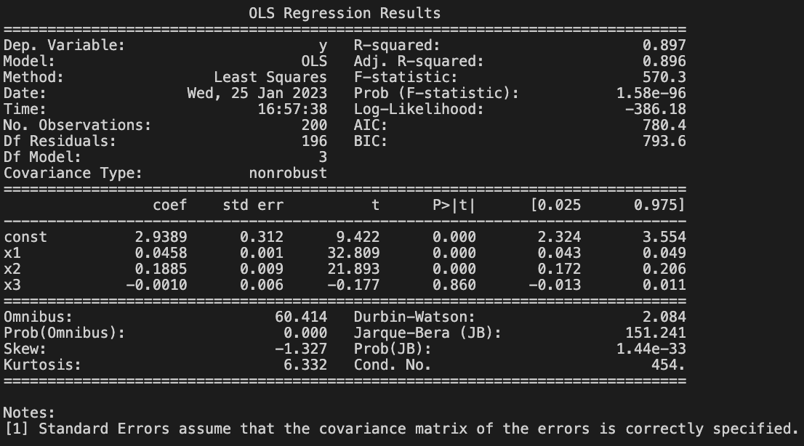

Simple linear regression is a useful approach for predicting a response on the basis of a single predictor variable
- In practice, we often have more than one predictor
- Advertising example: examine the relationship between sales and TV ads
- also have radio and news ads spending
- How can we extend our analysis of the advertising data in order to accommodate these two additional predictors?
One option is to run three separate linear regressions
We learned the reasonings behind linear regression, but what makes you think this is unsatisfactory?
- It is unclear how to make a single prediction of sales given the three advertising media budgets
- because each of the budgets is associated with a separate regression equation
- Each of the three regression equations ignores the other two media
in forming estimates for the regression coefficients
A better approach is to extend the simple linear regression model so that it can directly accommodate multiple predictors
Multiple Linear Regression
- The multiple linear regression model takes the form
- $Y = \beta_0 + \beta_1 X_1 \cdots+\beta_p X_p+\epsilon$
- $X_j$ represents the $j$th predictor and $\beta_j$ quantifies its effect on $Y$
- $\beta_j$: average effect on $Y$ of one unit increase in $X_j$, holding all other predictors fixed
- $\text{sales}=\beta_0+\beta_1 \text{TV}+\beta_2\text{radio}+\beta_3\text{news paper}+\epsilon $
As was the case in the simple linear setting, the regression parameters $\beta_1,...,\beta_p$ are unknown,
and must be estimated
Given estimiates $\hat{\beta}_1,...,\hat{\beta}_p$, we can make predictions
$\hat{y}=\hat{\beta}_0+\hat{\beta}_1x_1+\hat{\beta}_px_p$
- The parameters are estimated using the same least squares approach
- We choose $\hat{\beta}_1,...,\hat{\beta}_p$ to minimize the sum of squared residuals
- $\text{RSS} =\sum_i(y_i-\hat{y}_i)^2=\sum_i(y_i-\hat{\beta}_0-\hat{\beta}_1x_{i1}-\cdots-\hat{\beta}_px_{ip})^2$

- However, interpretation is somewhat tricky
Let's address four questions
1. Is There a Relationship
Between the Response and Predictors?
- In the simple LR, we check whether $\beta_1=0$
- In the multiple LR, we need to check
- $H_0:\beta_1=\cdots=\beta_p=0$
- $H_1: \text{at least one }\beta_j \text{ is non-zero}$
- This hypothesis test is performed by computing the F-statistic
- How do you interpret the F-stat here?
- Given these individual p-values for each variable, why do we need to look
at the overall F-statistic?
If we conclude on the basis of that p-value that at least one of the
predictors is related to the response, then it is natural to wonder which are
the guilty ones
2. Deciding on Important Variables
Why this is challenging?
- Consider $p=2$: $X_1$ and $X_2$
- How about $p=30$: $2^p$ models
- Come back here when we learn regularization
3. Model Fit: What's the problem of $R^2$?
4. A few assumptions: additive and linear model
$Y = \beta_0 + \beta_1 X_1 \cdots+\beta_p X_p+\epsilon$
- The additivity assumption
- the association between $X_j$ and $Y$ does not depend on the values of the other $X$s
- The linearity assumption
- the change in $Y$ associated with a one-unit change in $X_j$ is constant, regardless of the value of $X$
We can relax some assumptions, but be careful on interpretation
$Y = \beta_0 + \beta_1 X_1 +\beta_2 X_2+\beta_3 X_1 X_2+\epsilon$
$Y = \beta_0 + (\beta_1+\beta_3 X_2)X_1 +\beta_2 X_2+\epsilon$
$Y = \beta_0 + \tilde{\beta}_1X_1 +\beta_2 X_2+\epsilon$
where $\tilde{\beta}_1=\beta_1+\beta_3X_2$
$\text{sales} = \beta_0 + \beta_1 \text{TV} +\beta_2 \text{radio}$
$+\beta_3 (\text{TV}\times \text{radio})+\epsilon$
- interpret $\beta_3$ as the increase in the effectiveness of TV advertising
associated with a one-unit increase in radio advertising (or vice-versa)
Non-linear Relationships
- True relationship between the response and the predictors may be nonlinear
- How do we interpret:
- $Y = \beta_0 + \beta_1 X_1 +\beta_2 X_2^2+\epsilon$
- $\text{sales} = \hat{\beta}_0 + 0.06\text{TV} -0.000006 \text{TV}^2$
- What does this model capture?
- If including $\text{TV}^2$ led to a big improvement in the model, why not $\text{TV}^3$?
- Revisit later
Summary
- Is there a relationship between sales and advertising budgets
- How strong is the relationship?
- Which media are associated with sales?
- How large is the association between each medium and sales?
- How accurately can we predict future sales?
- Is the relationship linear?
- Is there synergy among the advertising media?
In the linear model setting, what's the meaing of adding complexity?